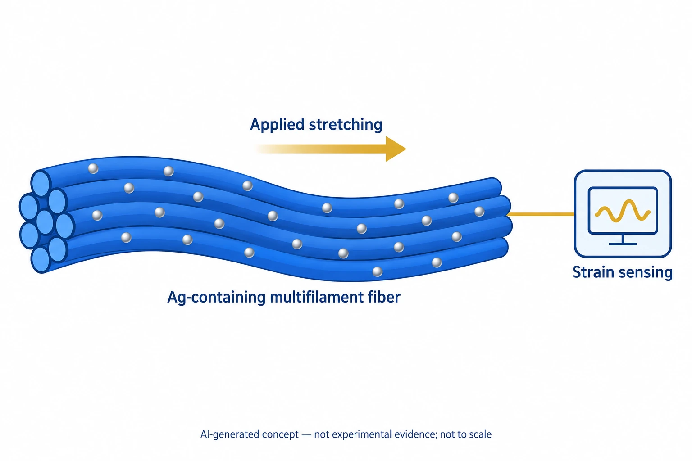

이 연구가 다루는 문제
은 나노입자와 여러 가닥의 섬유로 만든 전도성 구조에서, 늘어남에 따른 저항 변화를 이용해 변형을 감지합니다. 처음 늘릴 때와 반복해서 늘릴 때의 감도·측정 범위를 구분해 평가했습니다.
연구 내용과 주요 결과
Ag 나노입자와 Ag가 풍부한 다중 필라멘트 섬유 구조를 변형 감지에 사용했습니다.
민감도와 넓은 감지 범위를 함께 보고했지만 첫 인장과 후속 인장의 수치는 다릅니다.

AI로 만든 비축척 개념도입니다. 은(Ag)을 포함한 다중 필라멘트 섬유의 신장과 변형 감지의 관계를 보여 줍니다.
입자·화살표·연결선·물결 표시는 기능 기호이며 실제 회로나 측정 신호가 아닙니다. 초록 범위의 개념으로 입자 분포·섬유 형상·균열·전처리·감도·범위·첫 인장과 반복 인장의 성능을 재현하지 않습니다. 관련 정정문(10.1021/acsnano.8b05295)의 내용과 영향은 확인되지 않았습니다.
논문 원그림을 복제한 이미지가 아니며, 원그림 재사용 허가를 의미하지 않습니다.
더 확인할 점
반복 사용 전 전처리와 장기적인 신호 드리프트를 일정한 기준으로 평가할 필요가 있습니다.
비교할 때 살펴볼 조건
첫 인장과 반복 인장을 구분하고 변형률 범위, 기준 저항, 피로 시험 조건을 맞춰야 합니다.
함께 읽을 연구
A stretchable carbon nanotube strain sensor for human-motion detection
CNT 박막의 틈과 연결부를 이용한 전도는 은 다중 필라멘트 섬유와 다른 변형 감지 방식입니다.
이 연결은 출판사 초록에 한정됩니다. CNT 박막과 섬유의 감도·피로 수명을 비교하려면 변형 이력과 구조를 맞춰야 합니다.
초록을 참고한 소개해설에 사용한 자료
이 해설은 논문 본문과 원그림을 참고합니다. 보충자료 전체와 원자료의 별도 검토는 완료하지 않았습니다.